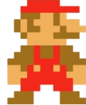

Alles guete zum nicht Geburtstag!
Bedingige für de limit-party-fund:
Ihlösbar ab 2040
De lieblingsunclegötti Gian muess au ihglade sii
Nur z verwende für limit sache (optional au dangeeros)
Rösl am sueche...
